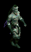
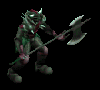
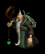

放棄された地下牢獄
| 制限Lv | 700〜1000 |
|---|---|
| 秘密ダンジョンの入口 | ブラックファイヤー外郭（7.100） |
| 報酬 | モンスターの討伐数 全部 経験値5000万 異界の清水5個 モンスターの討伐数 0匹 経験値5000万 異界の清水0個 |
| フィールド特殊効果 | ステータス低下20％ 属性抵抗上限70％ |
<マップ>
秘密ダンジョンの入口 ブラックファイヤー外郭
 |
● ● |
… 移動ポータル … 秘密ダンジョンの入口 |
秘密ダンジョン 放棄された地下牢獄
 |
○ П 〇 ◆ ▲ ▲ ▲ ▲ ▲ |
… 初期位置 … 扉 … 魔方陣 … ホーク … 束縛ヴァンパイア … 束縛のサティロス … 束縛のガーゴイル … 束縛された堕天使 … マスターリッチ |
<手順>
リーダーがホークに話す。
入口の扉を開ける。
リーダーが中ボス部屋の扉を開ける。
束縛ヴァンパイア（Lv925）Zin、束縛のサティロス（Lv925）Zin、束縛のガーゴイル（Lv925）Zin、束縛された堕天使（Lv925）Zinを倒す。
リーダーがボス部屋の扉を開ける。
ボス部屋の中では持続固定ダメージ500を受け続ける。
マスターリッチ（Lv925）Zinを倒す。
リーダーが魔方陣をクリック、全員入口へワープ。
リーダーがホークに話す。
<補足>
倒したモンスターの数によって報酬の異界の清水の数が異なる。
すべてのモンスターを倒すと異界の清水を5個獲得できる。
| モンスター | 使用スキル | スキル詳細 | |
|---|---|---|---|
 |
束縛ヴァンパイア （ノースフェラトゥZin） |
ディスチャージアタック | CP減少 |
| ライフドレイン | 物理ダメージ HP吸収 |
||
| 死の予告状 | 一定時間後即死 | ||
| デビルスピード | 移動・攻撃速度上昇 | ||
 |
束縛のサティロス （ケンタウロス王Zin） |
シールドピアシング | 貫通物理ダメージ |
| ヒーリング | HP回復 | ||
| ディップソング | ダメージ反射 | ||
| デッドリーナイトメア(M) | 睡眠 闇ダメージ |
||
 |
束縛のガーゴイル （オデロンガゴイルZin） |
ウィンディクラップ | 風+物理ダメージ |
| ソニックブロー(M) | 風ダメージ | ||
| フリーリジェネレーション | HP回復 | ||
| ディメンジョンアーマー | 異常・低下・呪い・全属性抵抗上昇 防御力上昇 |
||
 |
束縛された堕天使 （ライオンヘッド4 Zin） |
ワインディングサイズ | 物理ダメージ スタン |
| スタンアタック | 物理ダメージ スタン |
||
| ソーンアーマー | ダメージ反射 | ||
| フォースドレイン | 物理ダメージ Lv低下 |
||
| RED STONEの情熱II | 火+水+風+大地+物理ダメージ 攻撃力・防御力・HP上昇 |
||
 |
マスターリッチ （アークリッチZin） |
フレイムストーム(M) | 火+風ダメージ |
| ライトニングサンダー(M) | 風+光ダメージ 移動速度低下 |
||
| 死の予告状 | 一定時間後即死 | ||
| ダミーテレポート | ダミー生成 | ||
 |
古代戦闘悪魔 （邪臣4 Zin） |
ワインディングサイズ | 物理ダメージ スタン |
| ブラッドベルセルク | 攻撃力上昇 | ||
| スリーピーホール | 物理ダメージ 睡眠 |
||
| デビルスピード | 移動・攻撃速度上昇 | ||
| 死の視線 | 毒・暗闇・睡眠・麻痺・石化・混乱 | ||
 |
邪悪なサキュバス （パンタズドリーム4 Zin） |
スティール(M) | ゴールド奪取 |
| ダミーテレポート | ダミー生成 | ||
| 悪口(M) | 全属性抵抗低下 | ||
| クリスタルフラッシュII | 水+光ダメージ コールド |
||
 |
置き去りの死刑囚 （脱獄犯4 Zin） |
アイスボルト | 水ダメージ コールド |
| スタンアタック | 物理ダメージ スタン |
||
| ヘルカーニバル | 物理ダメージ 致命打 |
||
| ハンドレッドソード | 物理ダメージ | ||
 |
堕落した看守 （狂魔(狂った悪魔…)4 Zin） |
ピアスインパクト | 物理ダメージ |
| スタンアタック | 物理ダメージ スタン |
||
| ダークウェポン | 闇ダメージ付加 | ||
| ディメンジョンアーマー | 異常・低下・呪い・全属性抵抗上昇 防御力上昇 |
||
|  | 拷問技師 （堕落予言者Zin） |
ウィップアタック | 物理ダメージ 麻痺 |
| スタンアタック | 物理ダメージ スタン |
||
| ワームバイト(M) | 闇ダメージ 移動不能 |
||
| 死の予言(M) | 物理ダメージ 応急処置 |
||
|  | 冷酷な処刑人 （アベンジャーZin） |
ハルバードストライク | 風+物理ダメージ |
| レッドアイピア | 攻撃力・防御力・命中率・回避率低下 | ||
| スマッシュベロシティー | 物理ダメージ 移動速度・攻撃速度上昇 |
||
| ソーンアーマー | ダメージ反射 | ||
 |
堕落した暗殺者 （シーク天使4 Zin） |
ソードアタック | 物理ダメージ |
| フリーリジェネレーション | HP回復 | ||
| ヒーリング | HP回復 | ||
| ジャッジメントデイ(M) | 光ダメージ 異常・呪い・低下系異常を自動で治療 |
||
| ブラッディウィング(M) | 光ダメージ | ||
 |
奇怪な殺人鬼 （ウィークネス天使4 Zin） |
ワインディングサイズ | 物理ダメージ スタン |
| スタンアタック | 物理ダメージ スタン |
||
| ソーンアーマー | ダメージ反射 | ||
| フォースドレイン | 物理ダメージ Lv低下 |
||
| RED STONEの情熱II | 火+水+風+大地+物理ダメージ 攻撃力・防御力・HP上昇 |
||
|  | 邪悪な追従者 （ドゥームキャスターZin） |
ファイアボール(M) | 火ダメージ |
| ファイアースキン | 持続火ダメージ | ||
| メテオシャワー(M) | 火ダメージ | ||
| メルティングウェポン | 基本攻撃力低下 | ||